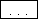
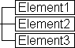
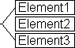
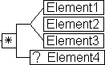
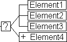

Key to the Near & Far Diagrams
Element Occurrences
| Required | |
| Optional. May occur zero or one times. | |
 | Required, repeatable. May occur one or more times. |
| Optional, repeatable. May occur zero or more times. |
Additional Symbols Associated with Elements
| Element content is expanded elsewhere in the diagram. | |
| The element has attributes. | |
|  | One or more elements collapsed for clarity |
| Element is the root element of the model. | |
| Text, numbers, and special characters |
Grouping Elements
|  | Required sequence: Element1 followed by Element2 followed by Element3 |
|  | Choice of sequence: Element1 or Element2 or Element3 |
Compound Examples
|  | Zero or more repetitions of Element1 or Element2 or Element3 followed by zero or one occurrences of Element4 |
|  | Zero or one occurrences of either Element1 followed by Element2 followed by Element3 or one or more occurrences of Element4 |
 | Either one or more repetitions of Element1 followed by Element2 or one or more occurrences of Element4 |